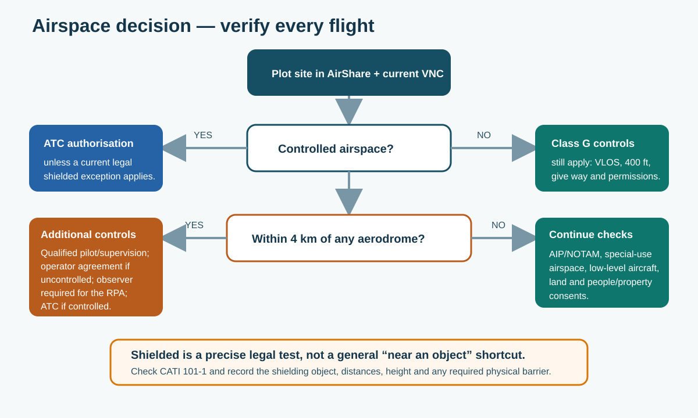

2. Airspace and permissions
2.1 Rules every pilot needs
Normal BOPRC operations under this manual use aircraft below 25 kg and must comply with the current Civil Aviation Rule Part 101 and CATI 101-1.
Before launch, confirm:
- the aircraft will remain within unaided visual line of sight and below cloud;
- the planned height is no more than 400 ft (120 m) above ground unless a current legal pathway allows otherwise;
- the drone will give way to and remain clear of every crewed aircraft;
- required consent for people and property has been obtained;
- controlled-airspace, aerodrome and special-use-airspace conditions are met;
- the flight will not create a hazard; and
- weather, obstacles, return-to-home, lost-link action and landing areas are suitable.
Legal requirement: if the job cannot comply with Part 101, stop and refer it for specialist aviation advice or an appropriate Part 102 operator. Logging a flight in AirShare does not by itself provide every approval.
2.2 Check the airspace
Controlled airspace requires Air Traffic Control authorisation unless a precise legal exception applies. Uncontrolled airspace (Class G) can still contain helicopters, agricultural aircraft, microlights, gliders and other low-level traffic.
Within 4 km of an aerodrome, extra requirements normally apply. Check private strips, heliports, hospital helipads and water aerodromes as well as public airports.

Figure 3. Use current information for the actual place, date and time. DJI warnings or unlocks are not the legal source for New Zealand airspace.
Use these sources together:
| Check | What it provides |
|---|---|
| AirShare | Drone airspace map, advisories, flight logging and ATC/aerodrome requests. |
| Current VNC | Controlled and special-use airspace, aerodromes, reporting points and frequencies. |
| Aeronautical Information Publication (AIP) New Zealand | Current aerodrome charts, frequencies and local procedures. |
| AIP Supplements and IFIS NOTAMs | Temporary restrictions, hazards, closures and activity. Recheck close to launch. |
2.3 Local airspace quick reference
This table is a planning aid only. Check the current AIP, VNC, NOTAM and AirShare entry on the day. Do not transmit on an aviation frequency unless appropriately qualified and authorised.
| Location | Planning contact and process | Published frequency information checked for this draft |
|---|---|---|
| Whakatāne Airport (NZWK) | Uncontrolled. Airport Operations 07 308 8397, airport@whakatane.govt.nz. Within 4 km: use AirShare and email the airport with flight details and a map; wait for conditions/agreement. | Unattended 118.6 MHz; Christchurch Information 121.25 MHz |
| Tauranga Airport (NZTG) | Controlled. Airport 07 575 2456, contact@tgaairport.nz; operational alternate 021 846 429. Use AirShare/ATC and follow airport conditions. | Tower/unattended 118.3 MHz; alternates 123.4 / 129.2 MHz; ATIS 126.6 MHz |
| Rotorua Airport (NZRO) | Controlled. Airport Operations 027 274 4508; Operations Manager 027 494 2419; Airways Tower 07 345 5199. | Tower/unattended 121.2 MHz; additional tower 120.1 MHz; ATIS 128.8 MHz; Bay Approach 119.5 / 123.8 MHz |
| Rotorua Lakes water aerodrome (NZRL) | Floatplane activity. Volcanic Air 07 348 9984; also check Rotorua controlled airspace. | Rotorua Tower 121.2 / 120.1 MHz; Tarawera MBZ 120.9 MHz |
| Galatea (NZGA) | Uncontrolled; NORDO microlight/gyrocopter and model-aircraft activity noted. Obtain operator agreement within 4 km. | Unattended 119.1 MHz |
| Ōpōtiki Aerodrome | Council consent is required within 4 km: 07 315 3030, info@odc.govt.nz. | Retrieve current AIP/VNC/AirShare information; no static frequency is reproduced here. |
Aeronautical information contacts: Airways NOTAM Office 03 358 1688, nof@airways.co.nz; National Briefing Office 0800 626 756 or 03 358 1509; Aeropath 04 471 1888 or 0800 500 045, aim@aeropath.aero.
Contacts and frequencies were last checked against official sources on 15 October 2026. Recheck them for the actual flight.
2.4 Crewed aircraft, land and other approvals
Agricultural aircraft are a particular regional risk. Before rural or river-corridor work, ask the landowner, farm manager and site contact about spraying, topdressing, frost work, lifting, mustering, helicopters, farm strips, loading areas and neighbouring activity. If low-level aircraft activity is possible but unresolved, do not launch.
During flight, crewed aircraft always have priority. Keep a clear descent and landing route and land promptly whenever separation is uncertain.
Airspace approval does not replace other approvals:
- Private or Māori land: confirm owner and occupier permission, access, gates, stock, biosecurity, sensitive locations and imagery restrictions.
- DOC land: use the DOC drone permission/concession process and follow any wildlife, visitor and cultural conditions.
- Council land: check the current bylaw, reserve plan and land-manager process for that site.
- State highways: the current Waka Kotahi pathway expects state-highway overflight to use a Part 102-certificated operator and a suitable risk plan. BOPRC's Part 101 team must not undertake that overflight under this manual. General contact: 0800 4 HIGHWAYS (0800 44 44 49).
- Local roads: confirm the road-controlling authority and traffic/public controls. A person standing in a live carriageway is not an acceptable spotter.